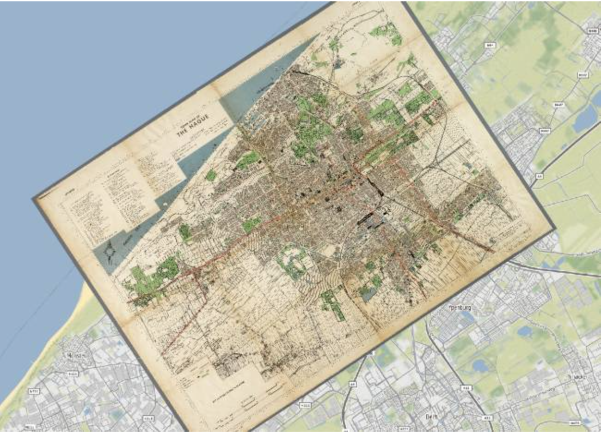
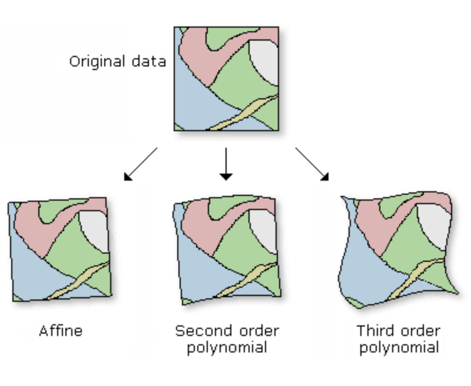

Georeferencing#
Georeferencing in QGIS is the process of aligning a raster image, such as a scanned map or aerial photograph, to a known coordinate system so that it can be used in spatial analysis. This involves assigning real-world coordinates to the image by identifying control points on the raster that correspond to known locations on the earth, often using existing vector layers or coordinate grids as a reference.
In many cases, governmental institutions publish maps only as PDFs, without public access to the underlying data. In these cases, knowing how to correctly georeference a map allows you to access and use the information in your GIS analyses. In the case discussed in this chapter, the soil degradation map of Somalia is only available in a PDF report. In order to use the information in a GIS analysis, we can use the georeferencer to assign geographic coordinates to the pixels of the image. After georeferencing the image, the result is a raster file (.tiff). This dataset can be vectorized (converted into vector data) or joined with other raster data, to gain additional information.
{kind=link}

A digitised old map of the Hague (Source: Kokoalberti).#
Georeferencing in QGIS#
In QGIS, the Georeferencer tool is used for this process. T Users manually place control points on the raster image and assign them a geographic coordinate, either by entering the coordinates manually, or selecting the corresponding point in the QGIS map canvas. These points serve as reference points for the georeferencing algorithm to add geographic coordinates to each pixel in the raster. The algorithm then transforms the image, adjusting its scale, rotation, and position to accurately overlay it with other geospatial layers. Georeferenced images become valuable for digitizing features and conducting spatial analyses within a GIS.
There are several transformation algorithms available in QGIS to reference a map. If the map is in the same CRS and only needs to be rotated, a linear transformation is sufficient. However, if the image or map is in a different CRS or is visibly skewed, a polynomial transformation is needed. The more complex the transformation algorithm is, the more Ground Control points you need.
{kind=link}

Different transformation types: linear (left), polynomial 2nd degree (middle), polynomial 3rd degree (right) (Source: ESRI).#
In most cases, you will use either linear, or polynomial (2nd or 3rd degree) transformations. There are many more transformation types to be used in QGIS. Each works best for a specific use case. For an explanation of each transformation type, check out the QGIS Documentation.
How to Georeference in QGIS#
In order to georeference a PDF map, you need to follow the following steps:
Prepare the map you want to georeference either by exporting the relevant page on the PDF or taking a screenshot.
In your QGIS window, add a basemap using the XYZ-tiles:
Layer>Add Layer>Add XYZ Tiles.A new window will open. Under
XYZ Connectionat the top of the window, select “OpenStreetMap”Click
Add. Ideally, use a basemap where you can identify exact locations on both the basemap and the map you want to georeference.
Open the Georeferencer by navigating to the Top Bar >
Layer>Georeferencer(seeopen_georeferencer)

Opening the Georeferencer in QGIS 3.36.#
A new window will open. This is the georeferencer. To add an image to georeference, click on

Open Raster.Select the image of the map you want to georeference. You can load image files, as well as PDFClick
Open.The image will appear in the middle of the georeferencer window. Click on

Transformation settings....A new window will open. Here you can set the transformation type and the target CRS. Below, you can set the name and save location of the file. Make sure that the
Load in the project when doneis checked.
Note
Setting the appropriate Coordinate Reference System Ideally, you want to set the CRS of the georeferenced map to the same as your project/the other layers in your project. To learn how to choose an appropriate CRS, check out the chapter on projections in module 1.
Click on
Ok.Once you have set the transformation type, you can start adding Ground Control Points (GCP) by clicking on

Add Point. Ground Control Points are points that you ascribe specific geographic coordinates to.Click on a point on the map image. This will be the precise location that you can identify on both the basemap and the map you wish to georeference.
Once you click on a position, a new window will appear. Here, you add the coordinates to the point you selected. There are two options to do this:
Enter the coordinates manually. You will need to know the exact coordinate. Sometimes, you have a coordinate grid on maps where you can
Select the points
 . This mode will minimize the georeferencer and open the QGIS Map canvas. Zoom to the same location you selected on the non-georeferenced map and Click once.
. This mode will minimize the georeferencer and open the QGIS Map canvas. Zoom to the same location you selected on the non-georeferenced map and Click once.Once the coordinates are entered, click
Ok
The georeferencer window will open again. This time, below the map image, you can see a point in the table. These are the Ground Control Points. Continue adding more GCP. Spread them out over the entire map. Make sure that the
Mean errorin the bottom right corner of the georeferencer window is as low as possible (below 5 is ideal).

Georeferencer dialogue in QGIS 3.36#
Once you have added enough points, click on

Start Georeferencing. QGIS will use the Points you added to transform the image into a georeferenced image, where every pixel has GPS coordinates ascribed to it.You can close the Georefencer window. Decide whether you want to save the GPC points in a file. If you are not sure if your georeferencing accuracy was precise enough, save the GPC points so you don’t have to do all the work again.
Congratulations, the georeferenced map will now appear as a raster layer in your QGIS-project

A georeferenced map of Somalia in the QGIS Map Canvas#
Adjusting the georeferenced layer#
It is possible to adjust the transparency of the georeferenced map so you can see the underlying layers:
Open the Layer Properties by Right-Clicking on the layer and selecting Properties
Navigate to the Transparency Tab.
Set the global opacity to 50%.
Alternatively, it is also possible to remove the white background. This is done by assigning the white pixels to the Alpha value in the transparency tab under “Custom Transparency Options”.
Open the Layer Properties by Right-Clicking on the layer and selecting Properties
Navigate to the Transparency Tab.
In the Custom Transparency Options box, under Transparency Band, select Band 4 (Alpha).
To the right, click on
Add value from displayClick on the white colour on the georeferenced map in the map canvas.
Click
Apply.
Self-Assessment Questions#
Test your knowledge
What is georeferencing, and why is it important?
Answer
Georeferencing is the process of assigning real‑world spatial coordinates (in a known coordinate reference system) to an image (e.g. aerial photograph, scanned map) so that it aligns correctly with geographic (vector or raster) data.
This lets you overlay, compare, measure, and analyze that image together with other GIS data. Without georeferencing, the image “floats” with no spatial context.
It ensures spatial accuracy, integration, and consistency across datasets, and enables meaningful spatial analysis and map production.
What are Ground Control Points (GCPs)? Why is it important to distribute them evenly across the image?
Answer
Ground Control Points (GCPs) are specific points in the image for which the real-world coordinates are known (i.e. you can identify the same point both in the raster and in a reference map or vector layer).
In georeferencing, you collect pairs of image coordinates and ground coordinates at these control points, and from them derive the transformation that maps the entire image into the coordinate system.
Why distribute them evenly?
If all GCPs cluster in one area, the transformation may be more accurate locally there but very distorted elsewhere.
Even distribution (across corners, edges, center) helps constrain distortions across the full image extent and produces a more stable, balanced warp.
It reduces extrapolation errors and ensures that all parts of the image are controlled.